湖南省2021年普通高中学业水平选择性考试 物理
注意事项：1．答卷前，考生务必将自己的姓名、准考证号填写在本试卷和答题卡上。2．回答选择题时，选出每小题答案后，用铅笔把答题卡上对应题目的答案标号涂黑。如需改动，用橡皮擦干净后，再选涂其他答案标号。回答非选择题时，将答案写在答题卡上。写在本试卷上无效。3．考试结束后，将本试卷和答题卡一并交回。
本册保留原卷第1—16题。其中1—14为必考题，15、16任选一题作答；两道选考题均完整解析，每题为5分＋8分，共13分。按原卷选考规则作答总分100分。
相关题目：第 1 题
本题共6小题，每小题4分，共24分。在每小题给出的四个选项中，只有一项是符合题目要求的。
相关题目：第 1 题 · 第 2 题 · 第 3 题 · 第 4 题 · 第 5 题 · 第 6 题
返回原卷说明与本册范围 返回一、选择题（24分）
题目与已知条件
（4分）核废料具有很强的放射性，需要妥善处理。下列说法正确的是（ ）
D.过量放射性辐射对人体组织有破坏作用，但辐射强度在安全剂量内则没有伤害
查看原题图／原始配图
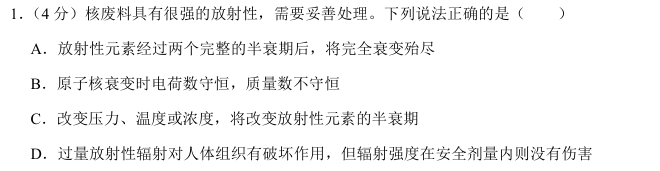
原始配图 1 · 原题及原图所用高中知识
半衰期；核反应守恒量；辐射防护的教材表述。
读题与思路
逐条检验，不把“半衰期”理解为完全衰变所需时间。
分步解析
- 经过一个半衰期剩余原核数为N₀/2，两个半衰期后为N₀/4，并没有完全消失，A错误。
- 核衰变中总电荷数、总质量数都守恒，B错误。质量数是核子总数，不等于反应前后的静质量。
- 通常高中所讨论的核衰变，其半衰期由核内部性质决定，温度、压力和浓度的通常变化不能改变它，C错误。
- 按本题教材语境，D为预期答案。过量辐射会造成组织损害，需要按防护标准控制照射。
检查与易错点
D中的“安全剂量内没有伤害”是原题的简化表述，不能扩展成医学上对所有低剂量、所有人群都绝对零风险的结论。
本题来源：paper · cross · drive-ref-1
返回一、选择题（24分）
题目与已知条件
（4分）物体的运动状态可用位置 和动量 描述，称为相，对应 图像中的一个点。物体运动状态的变化可用 图像中的一条曲线来描述，称为相轨迹。假如一质点沿 轴正方向做初速度为零的匀加速直线运动，则对应的相轨迹可能是（ ）
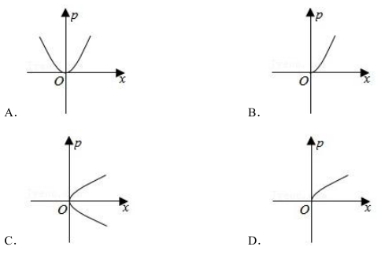
A—D四个p-x图选项，曲线分支、定义域与弯曲方向完全按原图保留。查看原题图／原始配图
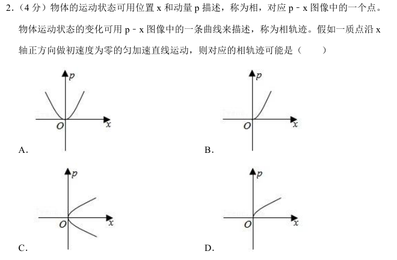
原始配图 1 · 原题及原图读题与思路
先消去时间，再保留沿+x运动对应的正动量分支。
分步解析
- 从静止出发且加速度a>0，运动关系为v²=2ax。动量p=mv，所以p²=2m²ax。
- 因为x≥0、v≥0，必须取p=m√(2ax)，不能把正、负两支都画出来。
- 该曲线从原点出发，位于第一象限，随x增加而上升，但越来越平缓，对应原图D。
检查与易错点
C含负动量分支，不符合单向运动条件。A、B的曲线弯曲方向与p∝√x不符。
本题来源：paper · cross · drive-ref-1
返回一、选择题（24分）
题目与已知条件
（4分）“复兴号”动车组用多节车厢提供动力，从而达到提速的目的。总质量为 的动车组在平直的轨道上行驶。该动车组有四节动力车厢，每节车厢发动机的额定功率均为 ，若动车组所受的阻力与其速率成正比（， 为常量），动车组能达到的最大速度为 。下列说法正确的是（ ）
B.若四节动力车厢输出功率均为额定值，则动车组从静止开始做匀加速运动
C.若四节动力车厢输出的总功率为 ，则动车组匀速行驶的速度为
D.若四节动力车厢输出功率均为额定值，动车组从静止启动，经过时间 达到最大速度 ，则这一过程中该动车组克服阻力做的功为
查看原题图／原始配图
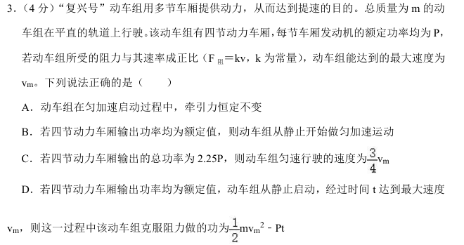
原始配图 1 · 原题及原图所用高中知识
功率P=Fv；牛顿第二定律；动能定理。
读题与思路
总额定功率是4P。阻力又与速度成正比，所以匀速时总功率与速度平方成正比。
分步解析
- 匀加速时牵引力F=ma+kv，随v增加而增大，A错误。恒功率时F=4P/v随v增大而减小，阻力kv同时增加，加速度不恒定，B错误。
- 最大速度时牵引力与阻力平衡，4P=kvm²。总功率为2.25P而匀速时，2.25P=kv²，故v/vm=√(2.25/4)=3/4，C正确。
- 额定功率持续工作t时做功4Pt。动能增加mvm²/2，故克服阻力的功为4Pt−mvm²/2，与D不符。
检查与易错点
“每节功率P”与“全车功率4P”要分清。恒定功率模型在v=0附近不宜机械套用F=P/v，但不影响本题对运动趋势与能量的判断。
本题来源：paper · cross · drive-ref-1
返回一、选择题（24分）
题目与已知条件
（4分）如图，在 位置放置电荷量为 的正点电荷，在 位置放置电荷量为 的负点电荷，在距 为 的某点处放置正点电荷 ，使得P点的电场强度为零。则Q的位置及电荷量分别为（ ）
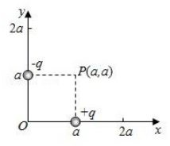
原x-y电荷位置图：+q在(a,0)，−q在(0,a)，P为(a,a)。查看原题图／原始配图
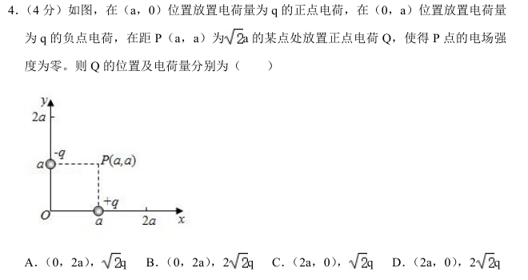
原始配图 1 · 原题及原图所用高中知识
点电荷场强；矢量合成；正电荷电场方向。
读题与思路
先求已有两电荷的合场强，再让第三个正电荷的场强反向且等大。
分步解析
- P(a,a)到两个已有电荷的距离均为a。正电荷在P的场强向上，负电荷在P的场强向左，大小都为kq/a²。
- 合场强指向左上方，大小√2 kq/a²。Q必须产生右下方场强；Q为正，应位于P的左上方。由PQ=√2a得到Q的位置为(0,2a)。
- 令kQ/(√2a)²=√2 kq/a²，解得Q=2√2q。
检查与易错点
场强方向是正试探电荷受力方向。第三个电荷为正，P处场强应背离Q，而不是指向Q。
本题来源：paper · cross · drive-ref-1
返回一、选择题（24分）
题目与已知条件
（4分）质量为 的凹槽静止在水平地面上，内壁为半圆柱面，截面如图所示，A为半圆的最低点，B为半圆水平直径的端点。凹槽恰好与竖直墙面接触，内有一质量为 的小滑块。用推力 推动小滑块由A点向B点缓慢移动，力 的方向始终沿圆弧的切线方向，在此过程中所有摩擦均可忽略，下列说法正确的是（ ）
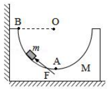
原半圆凹槽与墙面图，A最低点、B左端点、O圆心及切向力F。查看原题图／原始配图
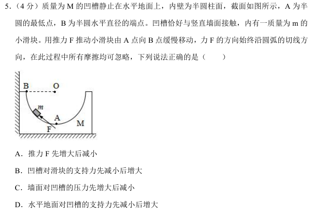
原始配图 1 · 原题及原图所用高中知识
准静态平衡；法向与切向分解；作用力与反作用力。
读题与思路
定义滑块所在半径与向下竖直方向的夹角θ，从A到B有0≤θ≤90°。分别研究滑块与凹槽。
分步解析
- 滑块缓慢移动，可视为平衡。切向推力F=mg sinθ，单调增大；法向支持力N=mg cosθ，单调减小，所以A、B均错误。
- 滑块对凹槽的作用力沿径向向外。它的水平分量为N sinθ=mg sinθcosθ=(mg/2)sin2θ，这与墙面压力平衡，先增大后减小，C正确。
- 凹槽受滑块向下的分力为Ncosθ=mg cos²θ，地面支持力为Mg+mg cos²θ，单调减小，D错误。
检查与易错点
推力F由外界直接作用于滑块，不能把它误加成凹槽所受的一个接触力。
本题来源：paper · cross · drive-ref-1
返回一、选择题（24分）
题目与已知条件
（4分）如图，理想变压器原、副线圈匝数比为 ，输入端C、D接入电压有效值恒定的交变电源，灯泡 、 的阻值始终与定值电阻 的阻值相同。在滑动变阻器 的滑片从a端滑动到b端的过程中，两个灯泡始终发光且工作在额定电压以内，下列说法正确的是（ ）
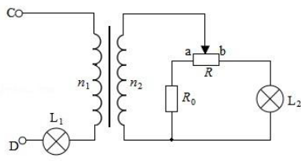
原变压器与L₁/L₂、R₀、滑动变阻器R电路，滑片从a到b，连接原样保留。C. 先变暗后变亮， 先变亮后变暗
D. 先变亮后变暗， 先变亮后变暗
查看原题图／原始配图
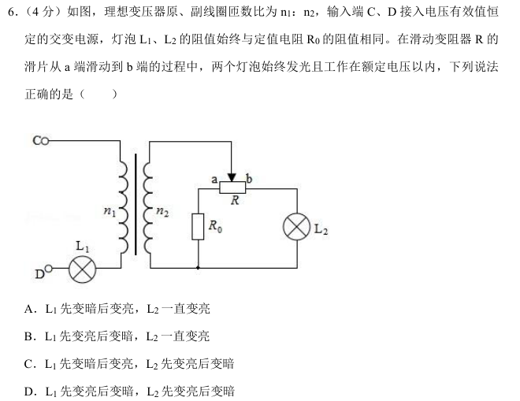
原始配图 1 · 原题及原图读题与思路
原线圈与L₁串联，不能把原线圈电压视为输入端恒定电压。用负载等效电阻判断原电流，再判断L₂支路电流。
分步解析
- 记匝数比n=n₁/n₂，滑片从a到b时a端至滑片电阻x由0增到R。副边两支路电阻为R₀+x和R₀+R−x，和恒定，乘积在中点最大，故并联等效电阻RL=(R₀+x)(R₀+R−x)/(2R₀+R)先增后减。
- 理想变压器把副边负载对应为原边n²RL。原电流I₁=U/(R₀+n²RL)先减后增，L₁功率I₁²R₀先减后增，即先暗后亮。
- L₂电流可由副边分流求得I₂=(U/n)/{R₀+R−x+R₀(2R₀+R)/[n²(R₀+x)]}。x增大时，分母中R₀+R−x与后一分式都减小，因此I₂持续增大，L₂持续变亮。
检查与易错点
“负载电阻先增后减”不等于每一条支路的电流也先减后增；L₂支路电阻本身一直减小，必须综合计算。
本题来源：paper · cross · drive-ref-1
本题共4小题，每小题5分，共20分。在每小题给出的四个选项中，有多项符合题目要求。全部选对的得5分，选对但不全的得3分，有选错的得0分。
相关题目：第 7 题 · 第 8 题 · 第 9 题 · 第 10 题
返回二、选择题（20分）
题目与已知条件
（5分）2021年4月29日，中国空间站天和核心舱发射升空，准确进入预定轨道。根据任务安排，后续将发射问天实验舱和梦天实验舱，计划2022年完成空间站在轨建造。核心舱绕地球飞行的轨道可视为圆轨道，轨道离地面的高度约为地球半径的 。下列说法正确的是（ ）
A.核心舱进入轨道后所受地球的万有引力大小约为它在地面时的 倍
D.后续加挂实验舱后，空间站由于质量增大，轨道半径将变小
查看原题图／原始配图
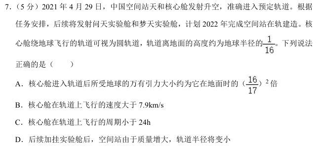
原始配图 1 · 原题及原图所用高中知识
万有引力；圆轨道速度与周期；轨道半径。
读题与思路
先把离地高度换成距地心距离。圆轨道速度和周期与卫星质量无关。
分步解析
- 设地球半径R，轨道半径r=R+R/16=17R/16。引力与距离平方成反比，F/F地=(R/r)²=(16/17)²，A正确。
- 由GMm/r²=mv²/r得v=√(GM/r)。r>R，故v小于近地轨道速度7.9 km/s，B错误。
- T=2π√(r³/GM)。这是距地面仅R/16的低轨道，轨道半径远小于地球同步轨道，周期小于24 h，C正确。
- 圆轨道条件中卫星质量m可以约去。加挂实验舱本身不意味着轨道半径一定变小，D错误。
检查与易错点
轨道半径用17R/16而非R/16。质量改变不直接决定轨道半径，轨道还取决于位置和速度。
本题来源：paper · cross · drive-ref-1
返回二、选择题（20分）
题目与已知条件
（5分）如图(a)，质量分别为 、 的A、B两物体用轻弹簧连接构成一个系统，外力 作用在A上，系统静止在光滑水平面上（B靠墙面），此时弹簧形变量为 。撤去外力并开始计时，A、B两物体运动的 图像如图(b)所示， 表示0到 时间内A的 图线与坐标轴所围面积大小，、 分别表示 到 时间内A、B的 图线与坐标轴所围面积大小。A在 时刻的速度为 。下列说法正确的是（ ）
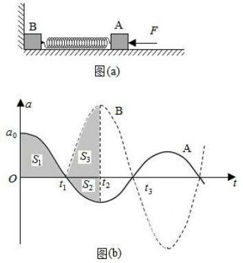
图(a)弹簧与A、B及墙；图(b)原a-t曲线、t₁/t₂/t₃和S₁/S₂/S₃阴影面积，零点及振幅比例完全保留。A.0到 时间内，墙对B的冲量等于
查看原题图／原始配图
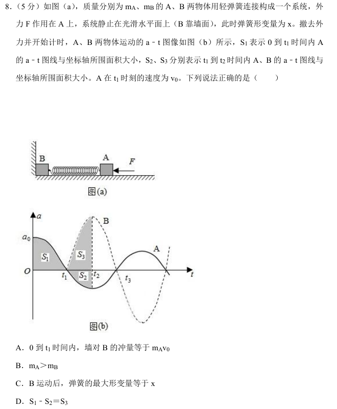
原始配图 1 · 原题及原图所用高中知识
冲量；动量守恒；a—t图面积；弹性势能。
读题与思路
分清B仍靠墙的阶段和B已离墙的阶段。图中t₂处弹簧伸长量最大，A、B速度相同。
分步解析
- 0至t₁时，B不动，弹簧由压缩恢复原长，A获得速度v₀。系统水平方向唯一外力是墙对B的力，系统动量由0变为mAv₀，故墙的冲量为mAv₀，A正确。
- B离墙后，两物体受到的弹簧力大小相等。图中同一时刻B的加速度绝对值大于A，所以mA>mB，B正确。
- 设初压缩量x、最大伸长量x′。由kx²/2=mAv₀²/2，和共速时v=mAv₀/(mA+mB)，能量守恒给kx′²/2=kx²/2−(mA+mB)v²/2。解得x′=x√[mB/(mA+mB)]<x，C错误。
- 图的有向面积给速度增量：t₂时vA=S₁−S₂，vB=S₃。弹簧最大伸长时二者共速，因此S₁−S₂=S₃，D正确。
检查与易错点
S₂是面积的大小，但对应A的负加速度，计算速度时要减去它。D项要用有向面积（速度变化量）判断，不能只比较面积的大小。
本题来源：paper · cross · drive-ref-1
返回二、选择题（20分）
题目与已知条件
（5分）如图，圆心为O的圆处于匀强电场中，电场方向与圆平面平行， 和 为该圆直径。将电荷量为 （）的粒子从a点移动到b点，电场力做功为 （）；若将该粒子从c点移动到d点，电场力做功为 。下列说法正确的是（ ）
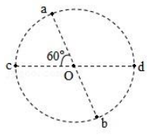
原圆内a/b、c/d两直径及60°夹角关系。B.将该粒子从d点移动到b点，电场力做功为
D.若只受电场力，从d点射入圆形电场区域的所有带电粒子都做曲线运动
查看原题图／原始配图
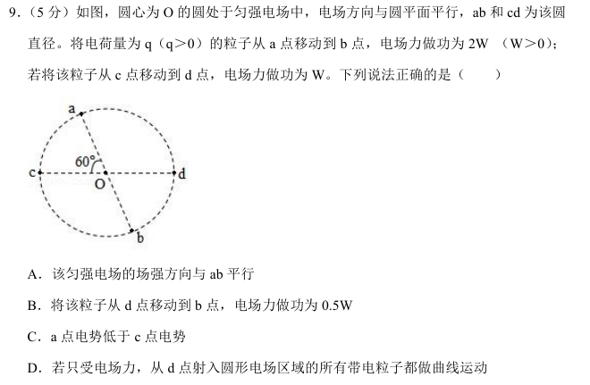
原始配图 1 · 原题及原图所用高中知识
电场力做功；电势差；矢量分解；直线与曲线运动条件。
读题与思路
取水平向右为x方向、竖直向下为y方向。两个直径提供两条独立的场强分量方程。
分步解析
- 设圆半径R，取向右为x正方向、向下为y正方向。c→d的位移为(2R,0)，由qEx·2R=W得Ex=W/(2qR)。
- a→b的位移为(R,√3R)。由qR(Ex+√3Ey)=2W得Ey=√3W/(2qR)。所以电场方向右下，正好平行ab，A正确。
- d→b位移为(−R/2,√3R/2)，做功q[−ExR/2+√3EyR/2]=−W/4+3W/4=W/2，B正确。
- 向下为正时a=(−R/2,−√3R/2)、c=(−R,0)，故a→c位移为(−R/2,+√3R/2)，做功为W/2。由Wac=q(φa−φc)知φa>φc，C错误。
- 从d处以与电场反向的初速度射入，速度与电场力共线，可以做直线减速运动。并非所有粒子都做曲线运动，D错误。
检查与易错点
电势差只由起终点决定。几何分量的正负必须依所选坐标轴，不能只记长度；电场线方向与轨迹方向也不必相同。
本题来源：paper · cross · drive-ref-1
返回二、选择题（20分）
题目与已知条件
（5分）两个完全相同的正方形匀质金属框，边长为 ，通过长为 的绝缘轻质杆相连，构成如图所示的组合体。距离组合体下底边 处有一方向水平、垂直纸面向里的匀强磁场。磁场区域上下边界水平，高度为 ，左右宽度足够大。把该组合体在垂直磁场的平面内以初速度 水平无旋转抛出，设置合适的磁感应强度大小 使其匀速通过磁场，不计空气阻力。下列说法正确的是（ ）
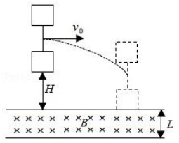
原两个正方形金属框及连接轻杆、初速度v₀、下落高度H与磁场宽度L。A. 与 无关，与 成反比
B.通过磁场的过程中，金属框中电流的大小和方向保持不变
C.通过磁场的过程中，组合体克服安培力做功的功率与重力做功的功率相等
D.调节 、 和 ，只要组合体仍能匀速通过磁场，则其通过磁场的过程中产生的热量不变
查看原题图／原始配图
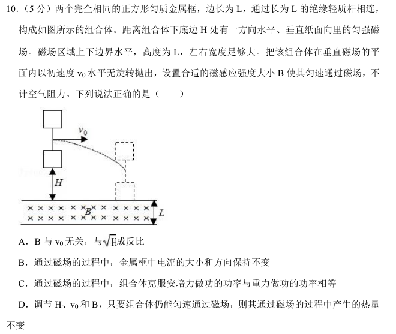
原始配图 1 · 原题及原图所用高中知识
平抛竖直分运动；感应电流；安培力；能量守恒。
读题与思路
水平运动不改变穿过水平磁场边界的面积。起作用的是入场时的竖直分速度。
分步解析
- 设组合体总质量M，每个金属框电阻R。下框进入磁场前，竖直速度vy=√(2gH)，与水平初速度v₀无关。
- 通过磁场时，每个有效阶段恰有一条长度L的横边切割边界，感应电动势BLvy，安培阻力B²L²vy/R。匀速要求此力等于Mg，故B²=MgR/(L²√(2gH))，B与H的四次方根成反比，而非与√H成反比，A错误。
- 金属框进入与离开磁场时磁通量变化趋势相反，电流方向改变，B错误。匀速时重力与安培力平衡，且沿竖直方向位移相同，两个力的功率大小相等，C正确。
- 从下框下边开始进入，到上框上边完全离开，组合体整体下降4L。速度保持不变，重力做功全部转化为焦耳热Q=4MgL，与H、v₀、B的调节无关，D正确。
检查与易错点
电流方向反向，安培力却都阻碍竖直下落。热量应按整个组合体下降的4L计算，不能只取一个框的边长。
本题来源：paper · cross · drive-ref-1
第11—14题为必考题，每个试题考生都必须作答。第15、16题为选考题，考生根据要求作答。
（一）必考题，共43分。第11题6分、第12题9分、第13题13分、第14题15分。
相关题目：第 11 题 · 第 12 题 · 第 13 题 · 第 14 题
返回三、非选择题（56分）
题目与已知条件
（6分）某实验小组利用图(a)所示装置探究加速度与物体所受合外力的关系。主要实验步骤如下：
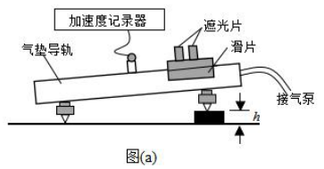
图(a)原气垫导轨装置，含加速度记录器、遮光片、滑片和垫块厚度h。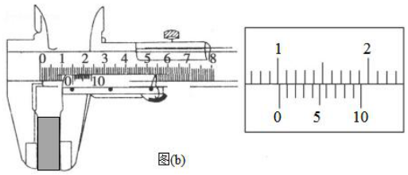
图(b)原游标卡尺及局部放大图；主尺、游标刻度和对齐位置逐像素保留。（1）用游标卡尺测量垫块厚度 ，示数如图(b)所示，＝______cm；
（2）接通气泵，将滑块轻放在气垫导轨上，调节导轨至水平；
（3）在右支点下放一垫块，改变气垫导轨的倾斜角度；
（4）在气垫导轨合适位置释放滑块，记录垫块个数 和滑块对应的加速度 ；
（5）在右支点下增加垫块个数（垫块完全相同），重复步骤（4），记录数据如下表：
| 1 | 2 | 3 | 4 | 5 | 6 |
|---|
| 0.087 | 0.180 | 0.260 | | 0.425 | 0.519 |
|---|
根据表中数据在图(c)上描点，绘制图线。
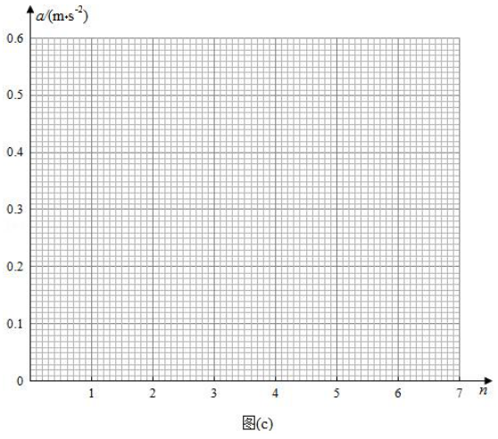
图(c)原空白a-n网格，纵轴0—0.6 m·s⁻²、横轴0—7，细刻度保留。如果表中缺少的第4组数据是正确的，其应该是______m/s²（保留三位有效数字）。
查看原题图／原始配图
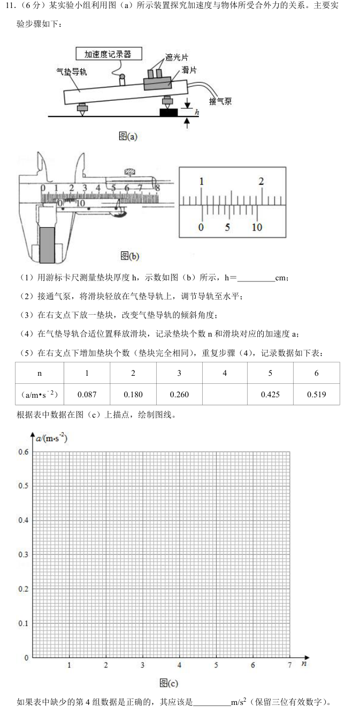
原始配图 1 · 原题及原图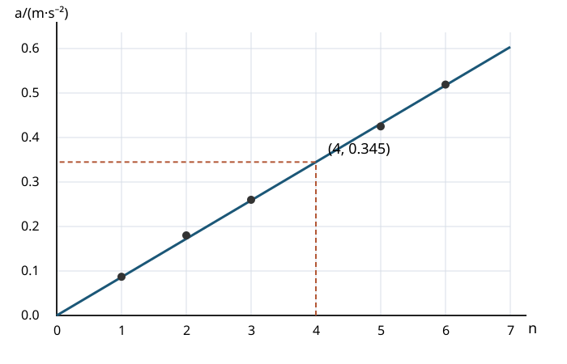
修订前解析配图 2 · 原创描点答案图所用高中知识
游标卡尺读数；重力沿斜面分量；描点拟合。
读题与思路
垫块相同时，导轨的小倾角与垫块个数成正比，因而a—n应近似过原点的直线。
分步解析
- 主尺读数为10 mm，游标第2条刻度与主尺对齐；10分度游标精度为0.1 mm，故h=10+2×0.1=10.2 mm=1.02 cm。
- 若两支点间距为l，倾角满足sinθ=nh/l，则a=g sinθ=(gh/l)n。五个实验点有小幅误差，应画使点均匀分布于两侧的趋势直线，不要折线逐点连接。
- 原点与趋势线上的远点连线，斜率约为0.0862 m/s²每个垫块，在n=4处读得a≈4×0.0862=0.345 m/s²（3位有效数字）。
- 下图给出五点及过原点拟合线；缺失点由这条趋势线读取。原创描点答案图
答案
（1）1.02；描点后作一条过原点的倾斜直线（图见解析）；第4组数据约为0.345 m/s²（0.342～0.347均合理）。
检查与易错点
游标卡尺一般不在最小分度后再估读一位。不能仅取第3、5组的平均而忽略全部数据的整体线性趋势。
本题来源：paper · cross · drive-ref-1
返回三、非选择题（56分）
题目与已知条件
（9分）某实验小组需测定电池的电动势和内阻，器材有：一节待测电池、一个单刀双掷开关S、一个定值电阻（阻值为 ）、一个电流表（内阻为 ）、一根均匀电阻丝（电阻丝总阻值大于 ，并配有可在电阻丝上移动的金属夹）、导线若干。由于缺少刻度尺，无法测量电阻丝长度，但发现桌上有一个圆形的钟表盘。某同学提出将电阻丝绕在该表盘上，利用圆心角来表示接入电路的电阻丝长度。主要实验步骤如下：
（1）将器材如图(a)连接：
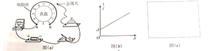
图(a)原钟表盘电阻丝接线，图(b)1/I-θ关系直线、截距d，图(c)待绘电路框。（2）开关闭合前，金属夹应夹在电阻丝的______端（填“a”或“b”）；
（3）改变金属夹的位置，闭合开关，记录每次接入电路的电阻丝对应的圆心角 和电流表示数 ，得到多组数据；
（4）整理数据并在坐标纸上描点绘图，所得图像如图(b)所示，图线斜率为 ，与纵轴截距为 ，设单位角度对应电阻丝的阻值为 ，该电池电动势和内阻可表示为 ＝______，＝______（用 、、、、 表示）；
（5）为进一步确定结果，还需要测量单位角度对应电阻丝的阻值 。利用现有器材设计实验，在图(c)方框中画出实验电路图（电阻丝用滑动变阻器符号表示）；
（6）利用测出的 ，可得该电池的电动势和内阻。
查看原题图／原始配图
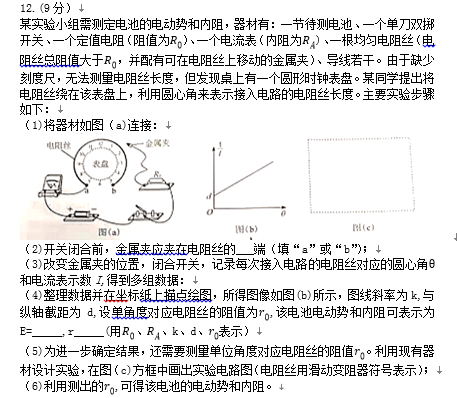
原始配图 1 · 原题及原图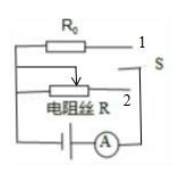
修订前解析配图 2 · 参考来源的等效替代电路所用高中知识
闭合电路欧姆定律；线性化处理；等效替代测电阻。
读题与思路
均匀电阻丝的电阻与圆心角成正比；1/I—θ直线把电动势和内阻放在斜率与截距中。
分步解析
- 为避免初始电流过大，接入电阻丝应最长，金属夹置b端。设电阻丝接入电阻为r₀θ，闭合电路方程为E=I(r+R₀+RA+r₀θ)。
- 整理为1/I=(r₀/E)θ+(r+R₀+RA)/E。对照k、d得E=r₀/k，r=dr₀/k−R₀−RA。
- 测r₀可用等效替代法。将电池和同一电流表作为公共串联部分，单刀双掷开关在“仅接R₀”与“仅接一段电阻丝”两条支路之间切换。不能让二者同时并联或同时串联。
- 先接R₀记电流I，再切到电阻丝并调节金属夹，直到电流仍为I。因为电池内阻和电流表内阻都没有改变，两个接入电阻相等：r₀θ=R₀，从表盘读出θ后得r₀=R₀/θ。参考来源的等效替代电路
答案
（2）b；（4）E=r₀/k，r=dr₀/k−R₀−RA；（5）电路及等效替代步骤见解析，r₀=R₀/θ。
检查与易错点
θ必须与定义r₀时采用的角度单位一致。求电池内阻时须扣除R₀与电流表内阻，不能把截距对应的总电阻直接当作r。
本题来源：paper · cross · drive-ref-1
返回三、非选择题（56分）
题目与已知条件
（13分）带电粒子流的磁聚焦和磁控束是薄膜材料制备的关键技术之一。带电粒子流（每个粒子的质量为 、电荷量为 ）以初速度 垂直进入磁场，不计重力及带电粒子之间的相互作用。对处在 平面内的粒子，求解以下问题。
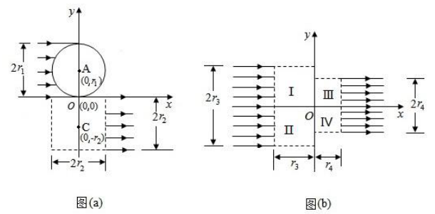
原磁聚焦/控束图(a)(b)，保留半径r₁/r₂/r₃/r₄、A/C坐标与Ⅰ—Ⅳ区域。（1）如图(a)，宽度为 的带电粒子流沿 轴正方向射入圆心为 、半径为 的圆形匀强磁场中，若带电粒子流经过磁场后都汇聚到坐标原点O，求该磁场磁感应强度 的大小；
（2）如图(a)，虚线框为边长等于 的正方形，其几何中心位于 。在虚线框内设计一个区域面积最小的匀强磁场，使汇聚到O点的带电粒子流经过该区域后宽度变为 ，并沿 轴正方向射出。求该磁场磁感应强度 的大小和方向，以及该磁场区域的面积（无需写出面积最小的证明过程）；
（3）如图(b)，虚线框Ⅰ和Ⅱ均为边长等于 的正方形，虚线框Ⅲ和Ⅳ均为边长等于 的正方形。在Ⅰ、Ⅱ、Ⅲ和Ⅳ中分别设计一个区域面积最小的匀强磁场，使宽度为 的带电粒子流沿 轴正方向射入Ⅰ和Ⅱ后汇聚到坐标原点O，再经过Ⅲ和Ⅳ后宽度变为 ，并沿 轴正方向射出，从而实现带电粒子流的同轴控束。求Ⅰ和Ⅲ中磁场磁感应强度的大小，以及Ⅱ和Ⅳ中匀强磁场区域的面积（无需写出面积最小的证明过程）。
查看原题图／原始配图
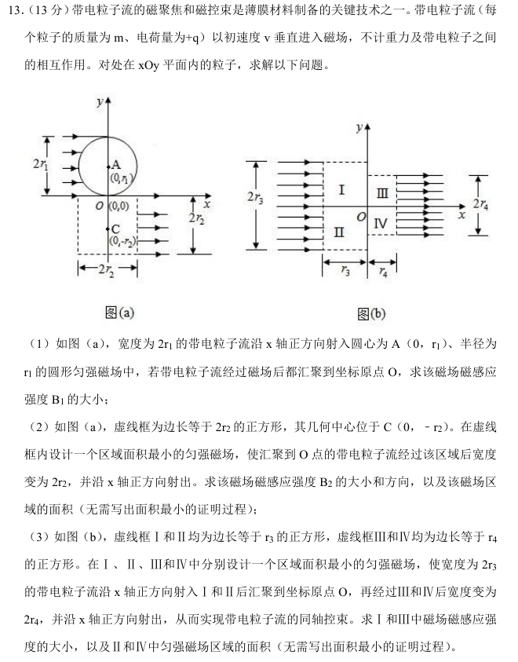
原始配图 1 · 原题及原图所用高中知识
洛伦兹力；匀速圆周运动；圆弧几何；扇形与三角形面积。
读题与思路
平行束聚焦的关键是粒子轨道半径与给定圆形磁场半径相等；反向利用聚焦几何即可把束流重新变平行。
分步解析
- 磁场不做功，速率保持v。由qvB=mv²/ρ得ρ=mv/(qB)。在(a)上方的圆形区域中，粒子轨道半径取r₁，可由两个等半径圆的几何关系验证出场方向沿指向O的直线，因此B₁=mv/(qr₁)。
- 第(2)问是聚焦的反过程。以C(0,−r₂)为圆心、r₂为半径设置磁场，粒子轨道半径也取r₂，即B₂=mv/(qr₂)。正电荷向下入场时要逐渐转为向右，洛伦兹力起初向右，由左手定则知磁场垂直纸面向里。最小区域为该完整圆盘，面积S=πr₂²。
- 第(3)问，上、下半束分别在边长r₃的方框内弯转并汇聚到O；对应轨道半径r₃，故Ⅰ区BⅠ=mv/(qr₃)。出射两区域对应轨道半径r₄，故Ⅲ区BⅢ=mv/(qr₄)。
- 每一个最小区域是两条半径为r的四分之一圆弧围成的透镜形，等于两个“90°扇形减去等腰直角三角形”。面积S=2(πr²/4−r²/2)=(π/2−1)r²。故Ⅱ区面积SⅡ=(π/2−1)r₃²，Ⅳ区面积SⅣ=(π/2−1)r₄²。题目已说明不要求证明最小性。
答案
（1）B₁=mv/(qr₁)；（2）B₂=mv/(qr₂)，方向垂直纸面向里，S=πr₂²；（3）BⅠ=mv/(qr₃)，BⅢ=mv/(qr₄)，SⅡ=(π/2−1)r₃²，SⅣ=(π/2−1)r₄²。
检查与易错点
磁場区域半径与粒子轨道半径是两个概念，本题由聚焦条件使其恰好相等。面积系数π/2−1约0.571，小于方框面积系数1。
本题来源：paper · cross · drive-ref-1
返回三、非选择题（56分）
题目与已知条件
（15分）如图，竖直平面内一足够长的光滑倾斜轨道与一长为 的水平轨道通过一小段光滑圆弧平滑连接，水平轨道右下方有一段弧形轨道PQ。质量为 的小物块A与水平轨道间的动摩擦因数为 。以水平轨道末端O点为坐标原点建立平面直角坐标系 ， 轴的正方向水平向右， 轴的正方向竖直向下，弧形轨道P端坐标为 ，Q端在 轴上。重力加速度为 。
（1）若A从倾斜轨道上距 轴高度为 的位置由静止开始下滑，求A经过O点时的速度大小；
（2）若A从倾斜轨道上不同位置由静止开始下滑，经过O点落在弧形轨道PQ上的动能均相同，求PQ的曲线方程；
（3）将质量为 （ 为常数且 ）的小物块B置于O点，A沿倾斜轨道由静止开始下滑，与B发生弹性碰撞（碰撞时间极短），要使A和B均能落在弧形轨道上，且A落在B落点的右侧，求A下滑的初始位置距 轴高度的取值范围。
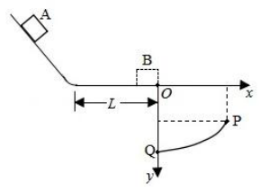
原倾斜轨道、长度L水平轨道与PQ弧，x向右、y向下，O处放置B。查看原题图／原始配图
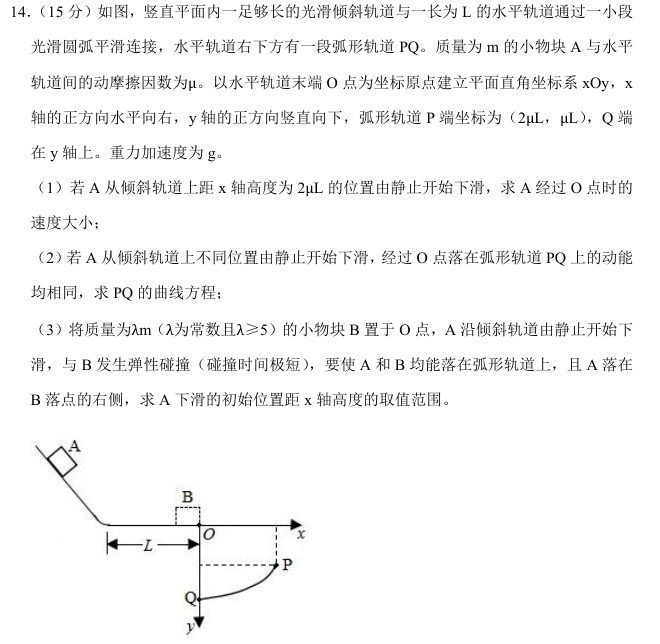
原始配图 1 · 原题及原图所用高中知识
动能定理；平抛运动；弹性碰撞；取值范围。
读题与思路
先找弧线上相同的落地动能，再建立初速度与落点的单调关系。碰撞后A反弹并往返粗糙水平段，需额外扣去两次摩擦损失。
分步解析
- 第(1)问：从高度2μL到O，重力做功2μmgL，摩擦做功−μmgL。由动能定理mv₀²/2=μmgL，得v₀=√(2μgL)。
- 设水平抛出速度u，落点为(x,y)，y向下为正。x=ut、y=gt²/2，所以u²=gx²/(2y)，到落点的动能Ek=mu²/2+mgy=mg[x²/(4y)+y]。
- 代入P(2μL,μL)得相同动能为2μmgL。整理x²+4(y−μL)²=4μ²L²。PQ是下半支：y=μL+√(4μ²L²−x²)/2，0≤x≤2μL，而非整条椭圆。
- 若A从高度h滑下，碰前速度U满足U²=2g(h−μL)。与静止、质量λm的B弹性碰撞，由动量和动能守恒得到A反弹速率u′A=(λ−1)U/(λ+1)，B向右速率uB=2U/(λ+1)。
- A反弹后沿水平段走L，上光滑斜面再回来，再走L返回O，摩擦总功−2μmgL，所以uA²=[(λ−1)/(λ+1)]²U²−4μgL。
- 能落在PQ上的平抛速度范围为0≤u≤√(2μgL)。又由x²=4μLu²/g−u⁴/g²可知在此范围内u越大，落点x越大。故要求uA>uB且uA²≤2μgL。
- 前一条件给U²>4μgL(λ+1)/(λ−3)；后一条件给U²≤6μgL(λ+1)²/(λ−1)²。用h=μL+U²/(2g)代换，得到μL(3λ−1)/(λ−3)<h≤4μL(λ²+λ+1)/(λ−1)²。
答案
（1）√(2μgL)；（2）x²+4(y−μL)²=4μ²L²，取μL≤y≤2μL、0≤x≤2μL的下半支；（3）μL(3λ−1)/(λ−3)<h≤4μL(λ²+λ+1)/(λ−1)²。
检查与易错点
左端严格不等号对应“A落点在B右侧”，同点不合题意；右端允许A恰落P。往返斜面本身没有能量损失，损失来自水平段的两次通过。
本题来源：paper · cross · drive-ref-1
请考生从两道题中任选一题作答。如果多做，则按第一题计分。
相关题目：第 15 题 · 第 16 题
返回（二）选考题（13分）
题目与已知条件
［物理——选修3—3］（13分）
（1）（5分）如图，两端开口、下端连通的导热汽缸，用两个轻质绝热活塞（截面积分别为 和 ）封闭一定质量的理想气体，活塞与汽缸壁间无摩擦。在左端活塞上缓慢加细沙，活塞从A下降 高度到B位置时，活塞上细沙的总质量为 。在此过程中，用外力 作用在右端活塞上，使活塞位置始终不变。整个过程环境温度和大气压强 保持不变，系统始终处于平衡状态，重力加速度为 。下列说法正确的是______。（填正确答案标号。选对1个得2分，选对2个得4分，选对3个得5分。每选错1个扣3分，最低得分为0分）
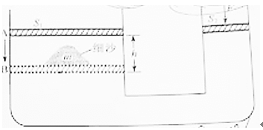
原连通汽缸与两轻活塞，截面S₁/S₂、A/B位置及下降高度h。A.整个过程，外力 做功大于0，小于
D.整个过程，理想气体向外界释放的热量小于
E.左端活塞到达B位置时，外力 等于
（2）（8分）小赞同学设计了一个用电子天平测量环境温度的实验装置如图所示。导热汽缸开口向上并固定在桌面上，用质量 、截面积 的活塞封闭一定质量的理想气体，活塞与汽缸壁间无摩擦。一轻质直杆中心置于固定支点A上，左端用不可伸长的细绳竖直悬挂活塞，右端用相同细绳竖直悬挂一个质量 的铁块，并将铁块放置到电子天平上。当电子天平示数为600.0 g时，测得环境温度 。设外界大气压强 ，重力加速度 。
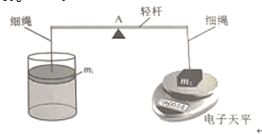
原温度测量装置：支点A两侧等臂轻杆，左悬活塞m₁，右悬铁块m₂并由电子天平承托。（ⅰ）当电子天平示数为400.0 g时，环境温度 为多少？
（ⅱ）该装置可测量的最高环境温度 为多少？
查看原题图／原始配图
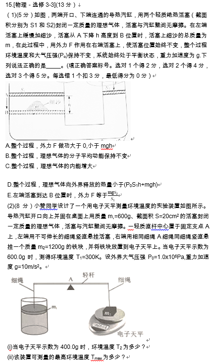
原始配图 1 · 原题及原图所用高中知识
理想气体内能；热力学第一定律；活塞平衡；等容变化。
读题与思路
第(1)问区分受力与做功；第(2)问先用天平读数求绳张力，再由活塞平衡求气压。
分步解析
- 第(1)问中右活塞始终不动，外力F作用点无位移，F做功为0，A错。导热气缸与恒温环境缓慢交换热量，气体温度不变，分子平均动能和理想气体内能均不变，B对、C错。
- 左活塞下移过程中，气体压强由p₀逐渐增至p₀+mg/S₁。气体体积减少S₁h，外界对气体做功小于最大压强乘体积减少量，即小于(p₀S₁+mg)h。ΔU=0，气体放出的热量等于外界做功，故D正确。不能把缓慢加砂过程的功直接写成mgh。
- 最终左活塞平衡给(p−p₀)S₁=mg，右活塞平衡给F=(p−p₀)S₂，故F=mgS₂/S₁，E正确。第(1)问选BDE。
- 第(2)问，两侧力臂等长，绳张力相等。天平示数为质量m读时，铁块平衡给T=(m₂−m读)g。活塞平衡为pS+T=p₀S+m₁g，气体体积在绳绷紧时保持不变。
- 初态m读=0.600 kg，T₁=(1.2−0.6)×10=6 N=m₁g，因此p₁=p₀。示数0.400 kg时T₂=8 N，p₂=p₀+(6−8)/(20×10⁻⁴)=0.99×10⁵ Pa。由p/T不变，T₂=300×0.99=297 K。
- 温度升高时气压升高、所需绳张力减小。达到绳张力为0的边界后细绳会松弛，不能继续按固定体积测量；这时pmax=p₀+m₁g/S=1.03×10⁵ Pa，环境最高温度为300×1.03=309 K。
答案
（1）BDE；（2）（i）297 K；（ii）309 K。
检查与易错点
原卷第15题总13分，第(1)问5分、第(2)问8分。天平显示的是质量标度，需乘g才能得到支持力；S=20 cm²=20×10⁻⁴ m²。
本题来源：paper · cross · drive-ref-1
返回（二）选考题（13分）
题目与已知条件
［物理——选修3—4］（13分）
（1）（5分）均匀介质中，波源位于O点的简谐横波在 水平面内传播，波面为圆， 时刻，波面分布如图(a)所示，其中实线表示波峰，虚线表示相邻的波谷。A处质点的振动图像如图(b)所示， 轴正方向竖直向上。下列说法正确的是______。（填正确答案标号，选对1个得2分，选对2个得4分，选对3个得5分。每选错1个扣3分，最低得分为0分）
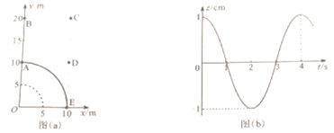
图(a)原圆波面、A/B/C/D/E坐标；图(b)A点z-t图，振幅1 cm、周期4 s，保留原图。B. 时，B处质点位于波峰
C. 时，C处质点振动速度方向竖直向上
D. 时，D处质点所受回复力方向竖直向上
（2）（8分）我国古代著作《墨经》中记载了小孔成倒像的实验，认识到光沿直线传播。身高1.6 m的人站在水平地面上，其正前方0.6 m处的竖直木板墙上有一个圆柱形孔洞，直径约为1.0 cm、深度为1.4 cm，孔洞距水平地面的高度是人身高的一半。此时，由于孔洞深度过大，使得成像不完整，如图所示。现在孔洞中填充厚度等于洞深的某种均匀透明介质，不考虑光在透明介质中的反射。
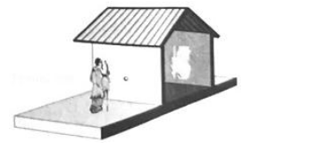
同卷补充原场景图：人、带圆柱孔的墙及后方倒像屏。（Ⅰ）若该人通过小孔能成完整的像，透明介质的折射率最小为多少？
（Ⅱ）若让掠射进入孔洞的光能成功出射，透明介质的折射率最小为多少？
查看原题图／原始配图
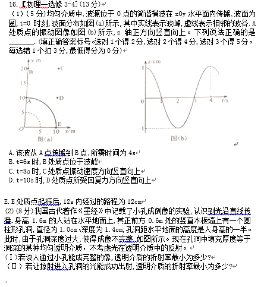
原始配图 1 · 原题及原图原始配图 2 · 第（2）问场景图（同卷清晰题本补图）所用高中知识
波长、周期和传播延迟；简谐运动；折射定律；临界几何。
读题与思路
波动题沿径向比较相位；光学题先找孔洞允许的最大折射角，再用入射角确定最低折射率。
分步解析
- 第(1)问：相邻峰谷间距5 m=λ/2，故λ=10 m；A的图像给T=4 s、振幅A₀=1 cm，波速u=λ/T=2.5 m/s。A到B的径向距离10 m，传播时间4 s，A选项正确。
- B比A滞后一个周期，t=6 s时相当于A在2 s，处于波谷，B错误。C到O的距离为10√5 m；相对A的传播延迟为(10√5−10)/2.5=4(√5−1) s，约4.94 s。t=8 s时C对应A在3.06 s，处在由平衡位置向波峰运动的阶段，振动速度向上，C正确。
- D到O的距离为10√2 m，相对A延迟4(√2−1) s，约1.66 s。t=10 s时D对应A在8.34 s，即一个周期内0.34 s，位移向上，回复力应向下，D错误。E在12 s=3T内的路程为3×4A₀=12 cm，E正确。第(1)问选ACE。
- 第(2)问：孔洞直径d=1.0 cm、深度l=1.4 cm。光线要穿过整个孔洞而不碰侧壁，其折射角β必须满足tanβ≤d/l=5/7；临界角满足sinβmax=5/√74。
- 完整成像的临界光线从头部射向孔洞入口的上边缘，再从出口下边缘射出：入口点越高，头部光线的入射角越小；从入口到出口下边缘允许的竖直下降最大，孔内允许的折射角也最大，两者都使所需折射率最小。脚部光线由上下对称同样能通过；头脚之间各点所需偏折更小，也都能成像。
- 人到墙的水平距离0.6 m、头顶比孔高0.8 m，孔的半径0.5 cm远小于这些尺度，按题意把入射点视为孔口（与原卷“3-4-5”数据设计一致）：sinα=0.8/√(0.6²+0.8²)=0.8。由n=sinα/sinβ得nmin=0.8×√74/5≈1.38，这是官方评分所用的结果。若再细抠半孔径，把高度差取为0.795 m，可得约1.373，二者差别来自孔径相对0.8 m的0.6%修正，不影响结论。
- 第(ii)问：掠射进入时入射角趋于90°，sinα→1；孔内折射角仍取允许的最大值βmax（tanβmax=d/l=5/7），得n′min=1/sinβmax=√74/5≈1.72，按原卷取两位有效数字为1.7。
答案
（1）ACE；（2）（i）nmin=0.8×√74/5≈1.38（官方评分答案）；（ii）n′min=√74/5≈1.7。
检查与易错点
原卷第16题总13分，两问分别5分、8分。孔内折射角由孔径与孔深共同限定（tanβ≤d/l），不要只用孔深；入射角由头部与孔的位置决定，按题给3-4-5数据sinα=0.8。折射角均相对于孔轴量取。波的传播方向在水平面，质点振动方向竖直。
本题来源：paper · cross · drive-ref-1 · web-hole-finite
题源与核验说明
- 2021.html旧版解析文件；SHA-256：d395eb852b9bf5a5996cb80c9a55cfa99da9fb645859a85c2ba85bf34d8e1285
- 2021年高考真题——物理（湖南卷） Word版含解析【KS5U 高考】.doc所附参考资料；SHA-256：4e9127df9946bce789d168988d5c0969465a8031f91e30f5a6dcc871f782239f
- 新浪教育 2021湖南高考物理原题公开原卷转载，核实1—16题题号与原选项顺序。q15.png和q16.png裁自该页的第8—10张试卷图片，完整保留原卷两道选考题层级。该页早期简略答案有明显错漏，解答未照抄。 q12.png改用该页第6张原卷图，保留完整图(c)空白框。
- 2021湖南物理清晰重排试卷及解析41页公开重排参考PDF。q1.png至q14.png（不含q12.png）裁自前12页中的相应完整题目；q12-circuit.png来自第29页，q16-scene.png来自第12页；q11-fit.svg为原创绘制。
- 2021湖南题本 第40页有限孔径折射几何下载原PDF并渲染第40页，公式明确使用sinα=(0.800−0.005)/√[0.600²+(0.800−0.005)²]，计算1.3732565…≈1.37；第(ii)问仍为√74/5≈1.72。已据独立几何推导纠正旧稿近似结果。